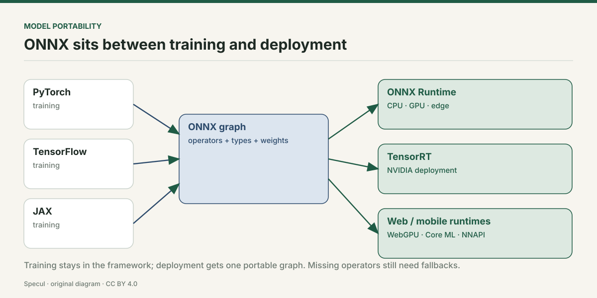

ONNX（开放神经网络交换格式）ONNX (Open Neural Network Exchange)
ONNX (Open Neural Network Exchange)
解决什么问题What problem it solves
让不同框架训练出的模型用同一种文件格式交换和部署。Let models trained in different frameworks be exchanged and deployed in one file format.
这是什么What it is
ONNX 定义计算图、算子与数据类型的开放标准，推理引擎可以直接加载。
它不负责训练，解决的是「一个框架训练、另一个环境推理」的格式壁垒。
ONNX is an open standard for computation graphs, operators and data types; inference engines can load it directly.
It does not handle training. It solves the format barrier between one framework’s training and another environment’s inference.

为什么需要知道Why it matters
跨平台部署、边缘设备、供应商替换都会碰到它。算子覆盖不全时仍需回退或自定义。Cross-platform deployment, edge devices and vendor swaps all meet it. Incomplete operator coverage still forces fallbacks or custom ops.
别名Chinese aliases
开放神经网络交换格式 · ONNX 格式 · onnx
同域词条Terms in the same area
现在能做什么What you can do now
回到名词地图看第5段的其他 45 个词 →Back to the map: the other 45 terms in stage 5 →